Hiking and Mountain Climbing
Hiking is a long distance walk along a specific trail, most commonly across country. Some hikes can be challenging and last for days including camping, but others can be a long day walk at a steady pace. However, mountain climbing is a challenging sport in which people climb steep rocky slopes to reach the top. Specific equipment is needed in order to mountain climb such as an ice axe and rope depending on the terrain. You physically climb using both your hands and feet onto the rocks or ice and snow to get to the top.